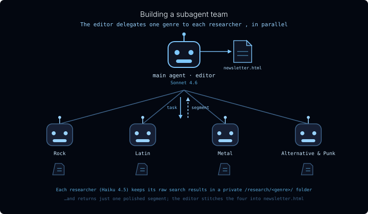
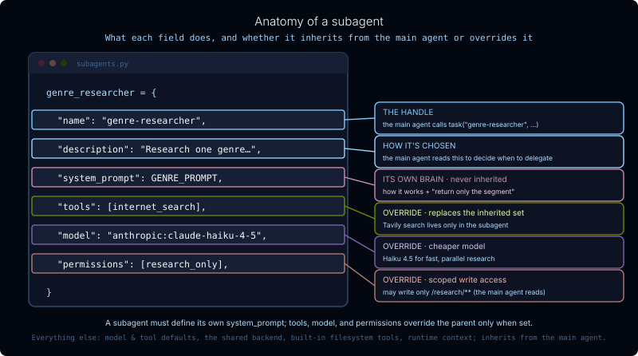

For translation, open lesson in new tab and use Chrome translate
In the previous lesson you learned about delegation - splitting a big job into pieces, handing each to a subagent, and stitching the results back together. In this lesson you'll build it: an editorial agent that puts out a weekly music newsletter for an online distributor.
The main agent is the editor. It knows the distributor's top four genres - Rock, Latin, Metal, and Alternative & Punk - and kicks off a research subagent for each one, all at once. Each researcher goes off and looks up what's new in its genre, then hands back a short, polished segment. The editor collects the four segments, assembles them into one newsletter, and renders it as a styled HTML page.
This is a hands-on tour of the subagent model: how a subagent gets its task, what it inherits from the main agent and what it overrides, how it keeps its messy research out of the editor's context, and how a sandboxed agent hands a finished file back to your code.

/ file folder; the editor assembles a newsletter.html file." width="660">Notice there's only one kind of researcher. We don't write a separate Rock subagent and a separate Metal subagent - they'd all do the same thing. Instead we define a single genre-researcher subagent type and the editor delegates to it four times, once per genre. The genre is just the task it's handed.
A subagent is defined as a plain dictionary. Here's the research subagent - the anatomy of every field is called out below.

One subtlety the diagram doesn't capture: since tools replaces the inherited set, listing only [internet_search] would seem to leave the researcher unable to write files. But the built-in filesystem tools (write_file, read_file, and friends) are always provided by the harness - they survive the override - which is why the researcher can still save its notes.
Each researcher gets a private folder named for its genre - /research/Rock/, /research/Metal/, and so on - to use as scratch space. It writes its raw search results there and can read them back while drafting its segment. The editor is given read-only access to /research/**: it can glance at a researcher's notes but can't write into them.
We set that up with filesystem permissions:
Permissions are first-match-wins, so a researcher's specific allow for /research/** beats the broad deny, and the editor's read-only access is enforced by the write deny.
The editor is a normal Deep Agent. It gets the stronger model, a single tool (markdown_to_html, which the researchers don't have), and the genre-researcher subagent.
Because a subagent is invoked like a tool, the editor can call task("genre-researcher", …) four times in a single step - all four researchers run in parallel, and the editor blocks until the slowest one returns. (These are synchronous subagents, from the previous lesson.)
The markdown_to_html tool is pure Python - it drops the assembled Markdown into a fixed, styled HTML template and returns the page as a string:
cd python
uv run python m4/m4_2_run_newsletter.py
Watch the editor fire off four researchers, then assemble their segments. When it finishes, open python/m4/output/newsletter.html in your browser to read this week's issue.
Everything the agent produced runs on a sandboxed StateBackend, so the script mirrors it out of agent state and onto disk under python/m4/output/ - the finished newsletter alongside each researcher's raw /research/<genre>/ archive:
Writing agent files to disk:
/output/newsletter.html -> newsletter.html (6,422 chars)
/research/Alternative & Punk/sources.md -> research/Alternative & Punk/sources.md (18,867 chars)
/research/Latin/sources.md -> research/Latin/sources.md (25,353 chars)
/research/Metal/sources.md -> research/Metal/sources.md (28,213 chars)
/research/Rock/sources.md -> research/Rock/sources.md (29,258 chars)
Open one of those sources.md files and you'll see the point: tens of kilobytes of raw, link-heavy search results. None of that crossed back to the editor - only each researcher's tight ~150-word segment did. That's the context quarantine: the bulky, untrusted material stays isolated in the research area while the editor's context stays clean.
View this run here in LangSmith. Notice the use of the write_todo tool and the parallel subagent calls.
You defined one subagent type. But every Deep Agent also ships with a built-in general-purpose subagent for free - a subagent with the same tools and model as the main agent and a generic prompt. It's the agent's escape hatch: when a task doesn't match any subagent you defined, the main agent can still delegate it to general-purpose to get context isolation, rather than doing the work inline.
It's the one subagent that also inherits the main agent's skills. You won't call it explicitly in this lab, but it's worth knowing it's always there.
In this lesson you built a working subagent team:
genre-researcher is delegated to once per genre: the genre is just the task it's handed.tools, model, or permissions replaces the inherited value: it is not additive. system_prompt is the one field you must always provide./research/<genre>/ folder and reads them back while drafting; permissions scope a researcher to its scratch space and give the editor read-only access there.StateBackend the agent never touches your disk: trusted host code reads the finished file out of result["files"].general-purpose subagent as a fallback.<div class="mcq-choices">
<div class="mcq-choice" onclick="handleMcqClick(this, false, 'fd6dad9e')"><strong>A)</strong> Deep Agents only allows one subagent type per main agent
</div>
<div id="mcq-answer-fd6dad9e" class="mcq-answer" style="display: none;">
<div class="mcq-answer-header"><strong>Answer: B</strong> ✅</div>
<div class="mcq-explanation">The four researchers are identical in behavior; only their assignment differs. So we define one genre-researcher type and the editor delegates to it once per genre, passing the genre as the task.</div>
</div>
In the next lesson you'll compare two ways to do the same fan-out - plain tool calls versus subagents - and see in the traces exactly what each approach costs the main agent's context.
Documentation:
- Subagents (Deep Agents)
- Context engineering (Deep Agents)
- Filesystem & backends (Deep Agents)
- Tavily Search API